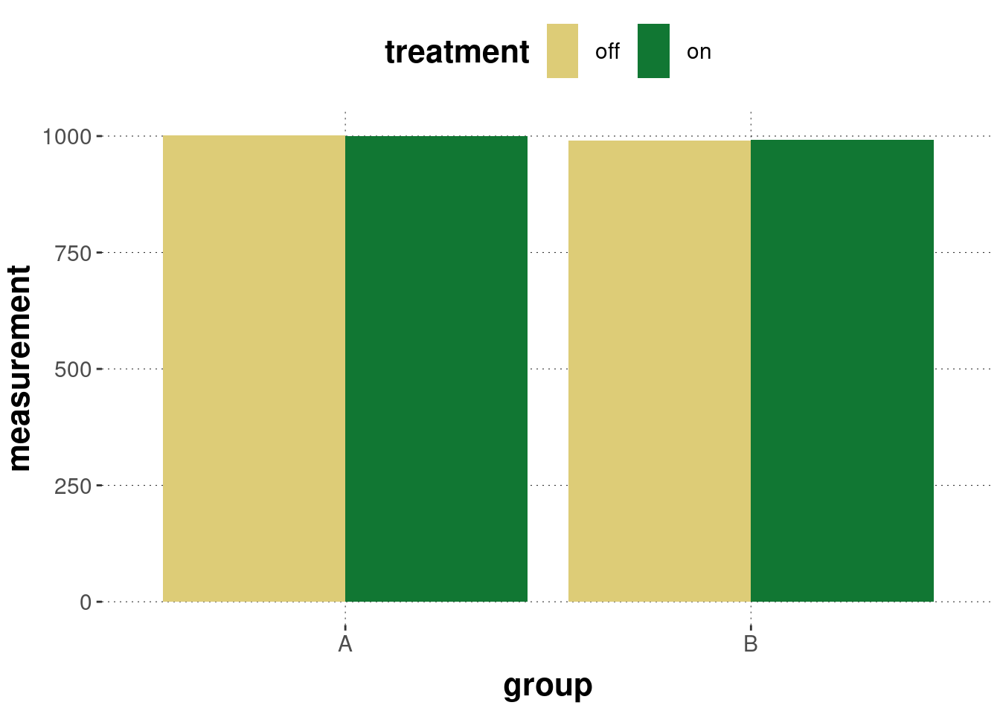
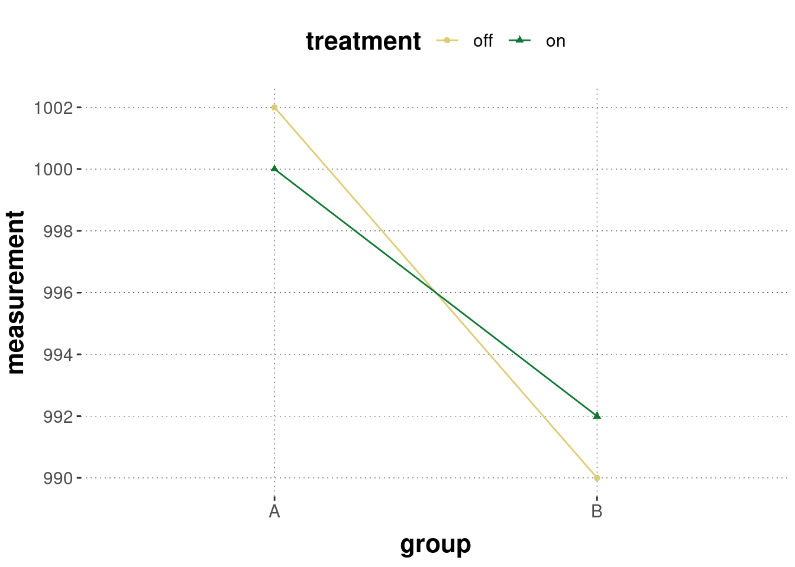

6.4 A rendezvous with popular geoms
In the following we will cover some of the more basic geom_ functions relevant for our present purposes. It might be useful to read this section top-to-bottom at least once, not to think of it as a mere reference list. More information is provided by the ggplot cheat sheet.
6.4.1 Scatter plots with geom_point
Scatter plots visualize pairs of associated observations as points in space. We have seen this for the avocado prize data above. Let’s look at some of the further arguments we can use to tweak the presentation by geom_point. The following example changes the shape of the objects displayed to tilted rectangles (sometimes called diamonds, e.g., in LaTeX \diamond) away from the default circles, the color of the shapes, their size and opacity.
avocado_data %>%
ggplot(aes(x = log(total_volume_sold), y = average_price)) +
geom_point(
# shape to display is number 23 (tilted rectangle, see below)
shape = 23,
# color of the surrounding line of the shape (for shapes 21-24)
color = "darkblue",
# color of the interior of each shape
fill = "lightblue",
# size of each shape (default is 1)
size = 5,
# level of opacity for each shape
alpha = 0.3
)
How do you know which shape is which number? - By looking at the picture in Figure 6.5, for instance.

Figure 6.5: The numerical coding of different shapes in ggplot Notice that objects 21-24 are sensitive to both color and fill, but the others are only sensitive to color.
6.4.2 Smooth
The geom_smooth function operates on two-dimensional metric data and outputs a smoothed line, using different kinds of fitting functions. It is possible to show an indicator of certainty for the fit. We will deal with model fits in later parts of the book. For illustration just enjoy a few examples here:
avocado_data %>%
ggplot(aes(x = log(total_volume_sold), y = average_price)) +
geom_point(
shape = 23,
color = "darkblue",
fill = "lightblue",
size = 3,
alpha = 0.3
) +
geom_smooth(
# fitting a smoothed curve to the data
method = "loess",
# display standard error around smoothing curve
se = T,
color = "darkorange"
)
6.4.3 Line
Use geom_line to display a line for your data if that data has associated (ordered) metrix values. You can use argument linetype to specify the kind of line to draw.

Sometimes you may want to draw lines between items that are grouped:
BLJM_associated_counts %>%
ggplot(
aes(
x = LB,
y = n,
color = JM,
group = JM
)
) +
geom_line(size = 3)
6.4.4 Barplot
A barplot, plotted with geom_bar or geom_col, displays a single number for each of several groups for visual comparison by length. The difference between these two functions is that geom_bar relies on an implicit counting, while geom_col expects the numbers that translate into the lenght of the bars to be supplied for it. This book favors the use of geom_col by first wrangling the data to show the numbers to be visualized, since often this is the cleaner approach and the numbers are useful to have access to independently (e.g., for referring to in the text).
Here’s an example of how bar_plot works (implicitly counting numbers of occurrences):
tibble(
shopping_cart = c(
rep("chocolate", 2),
rep("ice-cream", 5),
rep("cookies",8)
)
) %>%
ggplot(aes(x = shopping_cart)) +
geom_bar()
To display this data with geom_col we need to count occurrences first ourselves:
tibble(
shopping_cart = c(
rep("chocolate", 2),
rep("ice-cream", 5),
rep("cookies",8)
)
) %>%
dplyr::count(shopping_cart) %>%
ggplot(aes (x = shopping_cart, y = n) ) +
geom_col()
To be clear, geom_col is essentially geom_bar when we overwrite the default statistical transformation of counting to “identity”:
tibble(
shopping_cart = c(
rep("chocolate", 2),
rep("ice-cream", 5),
rep("cookies",8)
)
) %>%
dplyr::count(shopping_cart) %>%
ggplot(aes (x = shopping_cart, y = n) ) +
geom_bar(stat = "identity")
Barplots are a frequent sight in psychology papers. They are also controversial. They often fare badly with respect to the data-ink ratio. Especially, when what is plotted are means of grouped variables. For example, the following plot is rather uninformative (even if the research question is a comparison of means):
avocado_data %>%
group_by(type) %>%
summarise(
mean_price = mean(average_price)
) %>%
ggplot(aes(x = type, y = mean_price)) +
geom_col()
It makes sense to use the available space for a more informative report about the distribution of data points around the means, e.g., by using geom_violin or geom_histogram etc.
But barplots may also be good enough if there is not more of immediate relevance, such as when we look at counts or proportions. Still, it might help to include a measure of certainty. For instance, using the King of France data set, we can display proportions of ‘true’ answers with 95% bootstrapped confidence intervals like in the plot below. Notice the use of the geom_errorbar function to display the intervals in the following example.
data_KoF_processed %>%
# drop unused factor levels
droplevels() %>%
# get means and 95% bootstrapped CIs for each condition
group_by(condition) %>%
nest() %>%
summarise(
CIs = map(data, function(d) bootstrapped_CI(d$response == "TRUE"))
) %>%
unnest(CIs) %>%
# plot means and CIs
ggplot(aes(x = condition, y = mean, fill = condition)) +
geom_col() +
geom_errorbar(aes(ymin = lower, ymax = upper, width = 0.2)) +
ylim(0,1) +
ylab("") + xlab("") + ggtitle("Proportion of 'TRUE' responses per condition") +
theme(legend.position = "none") +
scale_fill_manual(values = project_colors)
6.4.5 Plotting distributions: histograms, boxplots, densities and violins
There are different ways for plotting the distribution of observations in a one-dimensional vector, each with its own advantages and disadvantages: the histogram, a box plot, a density plot, and a violin plot. Let’s have a look at each, based on the average_price of different types of avocados.
The histogram displays the number of occurrences of observations inside of prespecified bins. By default the function geom_histogram uses 30 equally spaced bins to display counts of your observations.

If we specify more bins, we get a more fine-grained picture. (But notice that such a high number of bins works for the present data set, which has many observations, but it would not necessarily for a small data set.)

We can also layer histograms but this is usually a bad idea (even if we tinker with opacity) because a higher layer might block important information from a lower layer:

An alternative display of distributional metric information is a box plot. Box plots are classics, also called box-and-whiskers plots, and they basically visually report key summary statistics of your metric data. These do work much better than histograms for direct comparison:

What we see here is the median for each group (thick black line) and the 25% and 75% quantiles (boxes). The straight lines show the range from the 25% or 75% quantiles to the values given by median + 1.58 * IQR / sqrt(n), where the IQR is the “interquartile range”, i.e., the range between the 25% and 75% quantiles (boxes).
To get a better picture of the shape of the distritbuion, geom_density uses a kernel estimate to show a smoothed line, roughly indicating ranges of higher density of observations with higher numbers. Using opacity, geom_density is useful also for the close comparison of distributions across different groups:
avocado_data %>%
ggplot(aes(x = average_price, color = type, fill = type)) +
geom_density(alpha = 0.5)
For many groups to compare, density plots can become cluttered. Violin plots are like mirrored density plots and are better for comparison of multiple groups:

A frequently seen method of visualization is to layer a jittered distribution of points under a violin plot, like so:
avocado_data %>%
ggplot(aes(x = type, y= average_price, fill = type)) +
geom_jitter(alpha = 0.3, width = 0.2) +
geom_violin(alpha = 0.5) 
6.4.6 Rugs
Since plotting distributions, especially with high-level abstract smoothing as in geom_density and geom_violin fails to give information about the actual quantity of the data points, rug plots are useful additions to such plots. geom_rug add marks along the axes where different points lie.
Here is an example of geom_rug combined with geom_density:
avocado_data %>%
filter(type == "organic") %>%
ggplot(aes(x = average_price)) +
geom_density(fill = "darkorange", alpha = 0.5) +
geom_rug()
Here are rugs on a two-dimensional scatter plot:
avocado_data %>%
filter(type == "conventional") %>%
ggplot(aes(x = total_volume_sold, y = average_price)) +
geom_point(alpha = 0.3) +
geom_rug(alpha = 0.2)
6.4.7 Annotation
It can be useful add further elements to a plot. We might want to add text, or specific geometrical shapes to highlight aspects of data. The most general function for doing this is annotate. The function annotate takes as a first argument a geom argument, e.g., text or rectangle. It is therefore not a wrapper function in the geom_ family of functions, but the underlying function around which connvenience functions like geom_text or geom_rectangle are wrapped. The further arguments that annotate expects depend on the geom it is supposed to realize.
Suppose we want to add textual information at a particular coordinate. We can do this with annotate as follows:
avocado_data %>%
filter(type == "conventional") %>%
ggplot(aes(x = total_volume_sold, y = average_price)) +
geom_point(alpha = 0.2) +
annotate(
geom = "text",
# x and y coordinates for the text
x = 2e7,
y = 2,
# text to be displayed
label = "Bravo avocado!",
color = "firebrick",
size = 8
)
We can also single out some data points, like so:
avocado_data %>%
filter(type == "conventional") %>%
ggplot(aes(x = total_volume_sold, y = average_price)) +
geom_point(alpha = 0.2) +
annotate(
geom = "rect",
# coordinates for the rectangle
xmin = 2.1e7,
xmax = max(avocado_data$total_volume_sold) + 100,
ymin = 0.7,
ymax = 1.7,
color = "firebrick",
fill = "transparent",
size = 2
)